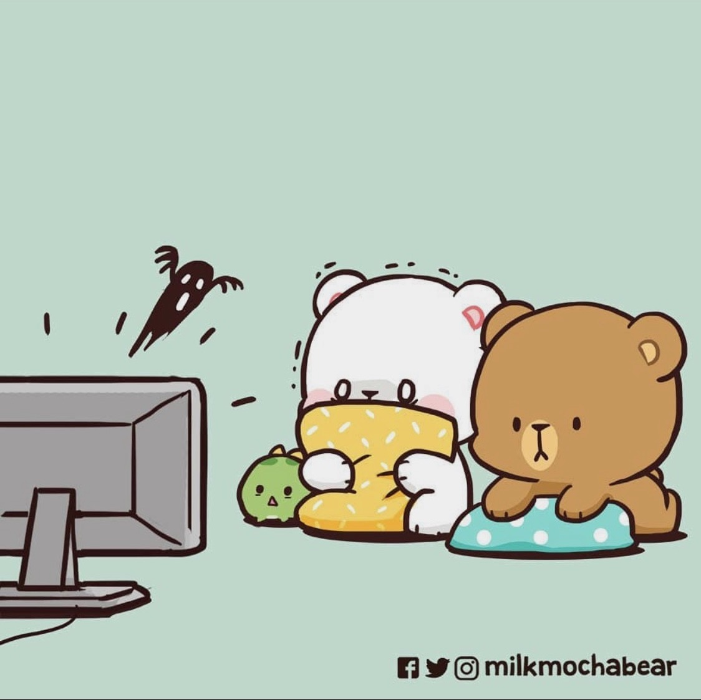
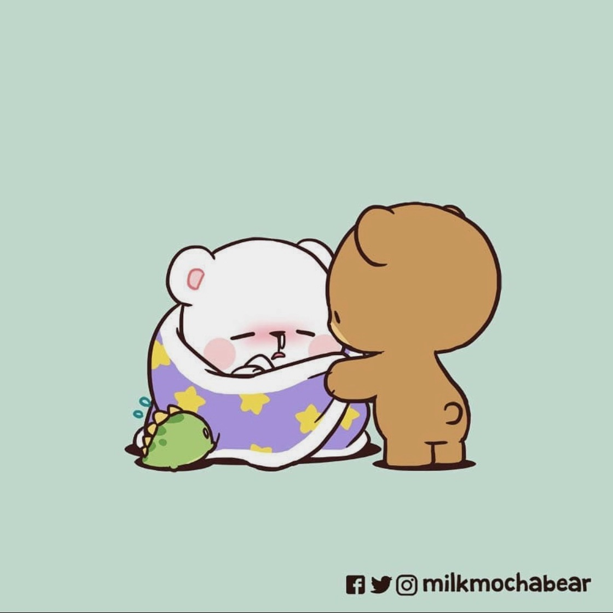
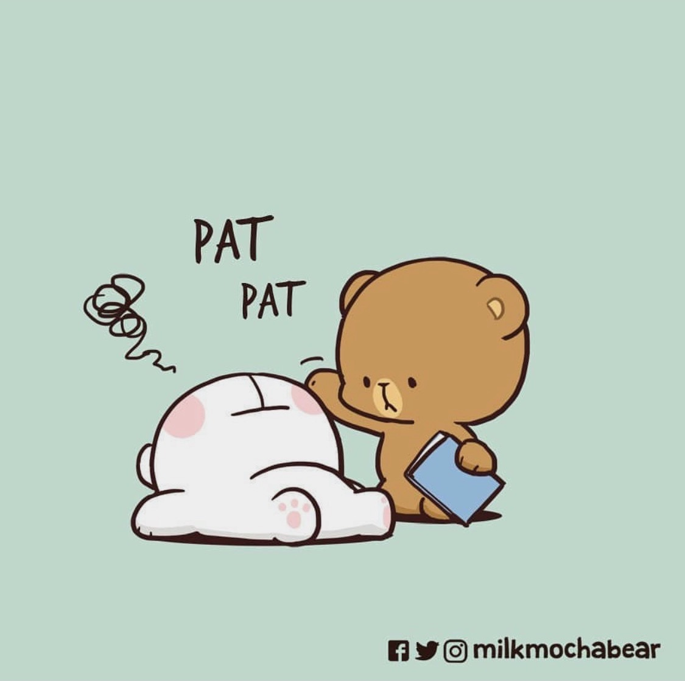
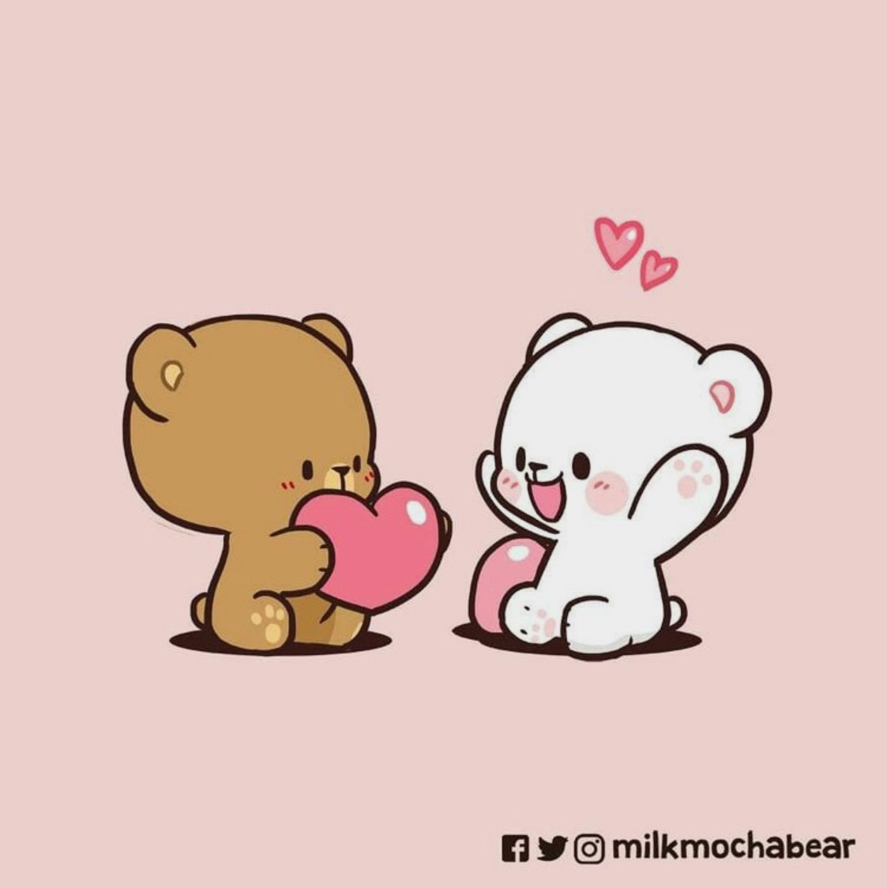
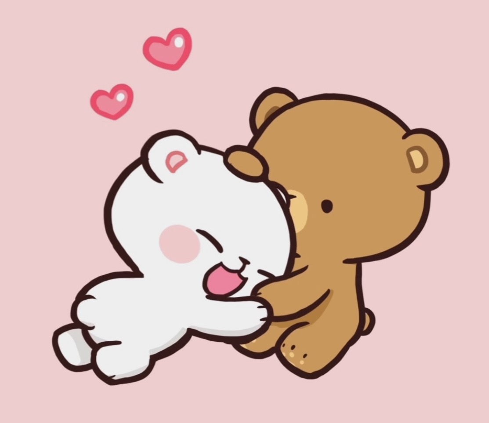
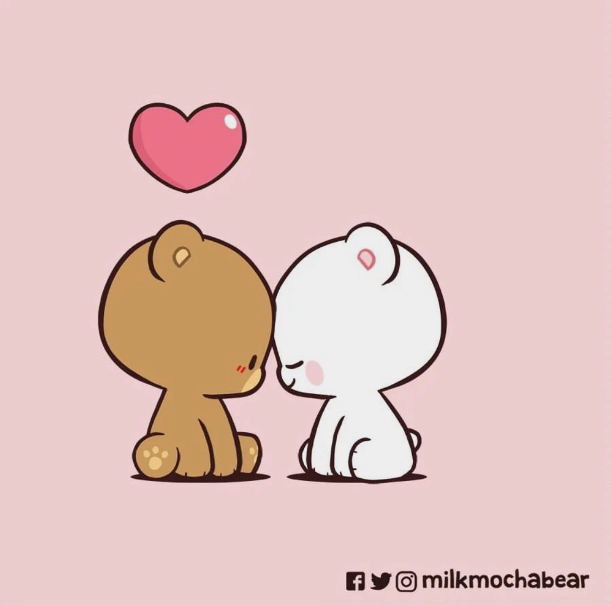
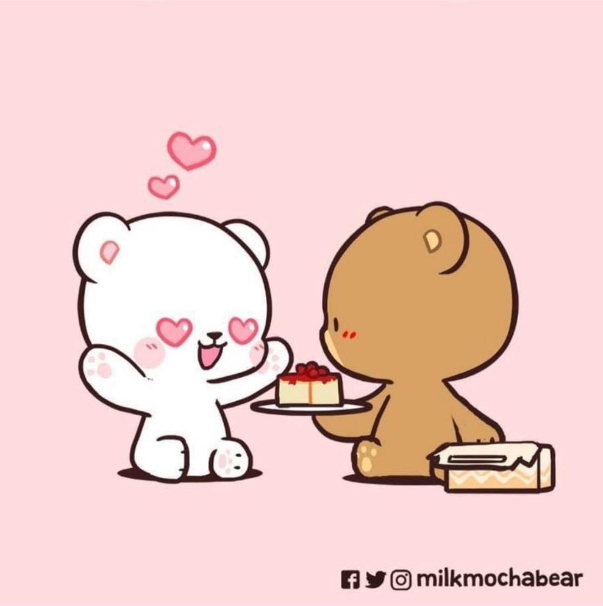

I love that our opposite parts. It makes me feel like we fit each other more. For example, since you bite ice cream, and I can't, you can bite ice cream for me to eat. I love that I have you to accommodate for what I cannot do.
I can call your name and you'll be there for me. I'll hear noises or still think of horror movies I've watched, and I'll remind myself that I have you. Before you, I felt scared. Now, I feel scared AND secure when I know I have you. I love that you are always there for me when I am scared.
I know I'm an emotional mess. I was not like this before. Ever. But I genuinely believe because I have you, because you are so aware of my emotions, and because I know I have someone who will take care of me the way I want to be taken care of I feel comfortable to cry and feel my emotions, instead of bottling it. I love that I have you to cry to.
You are my happy place. I can stare at you for hours and feel at peace with who I am and where I am in life. When my whole world feels like it is a mess, or when I feel lost, you remind me that everything is going to be okay. Even when things are okay, when we lay in bed together, or when I'm in your arms, all my worries go away. I love that you give me so serenity by just being there.
You have given me so much love throughout our relationship. Sometimes I do not know what to do with it all. You give small bundles of love here and then large bundles of love there. I feel so warm thinking about how you love every part of me. I feel like I love that I can be whoever I want when I'm with you, and you'll find some way to make sure every piece of me is appreciated and loved for.
When I put my arms around your neck, and you put your arms around my waist, I feel like we are perfect the fit. I love the way my head is directly in front of your heart, and I can dig my face into the sweater or shirt you are wearing. I can then smell the way you smell and instantly feel a sense of relief over a body. Every tension, every intrusive thought is gone. I love the way your arms squeeze so hard so I can feel secure.
The simplicity of you and me and us. Everything just makes sense when I am with you. We just are We are here for each other. I love thinking that we are just forever. No start or end to us. We do it so well whatever we are doing. I love that everything aligns in the right spot when I am with you.
Thank you for loving my eating habits, the one thing I struggle to love about myself. I love it when you rub my belly and when you encourage me to eat lots. I had a rough relatinoship with food last year and but every comment you make about food and me, and when you rub my belly, I forget that it ever happened. Thank you for your words and physical affection to the parts of that I don't love. I love that I have you to build healthy habits.